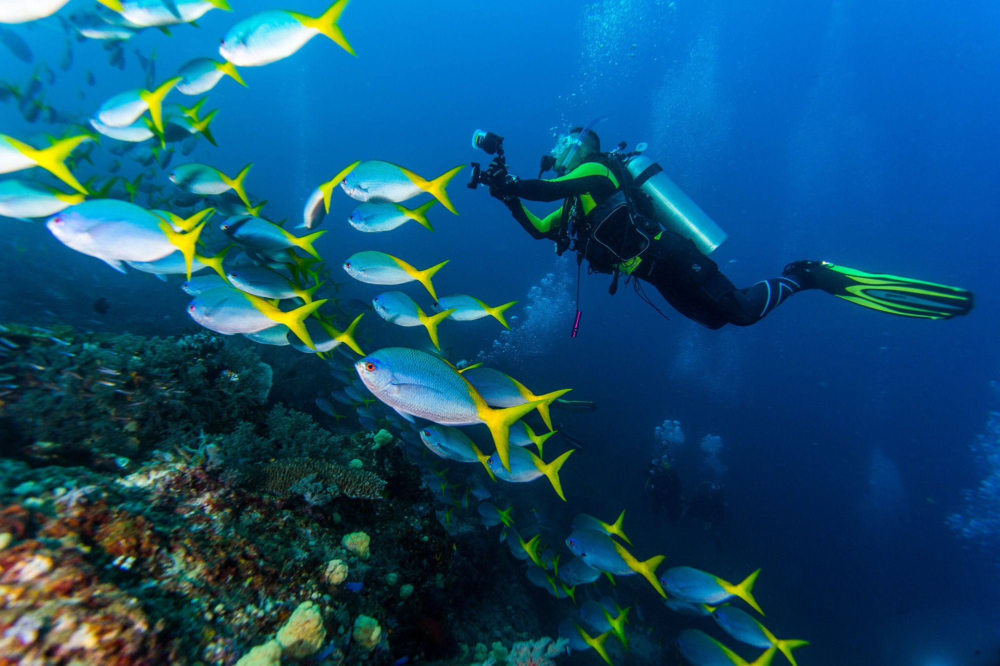

01
Reef days
Drift over reef edges, read the water and leave the smallest possible trace.
Dive site database
Experiences
Diving, marine life, village encounters and liveaboard days shaped around the rhythm of the archipelago.
Diving
Raja Ampat sits inside the Coral Triangle. The experience is defined by current, visibility, reef health, marine etiquette and the time you allow yourself to look.
Drift over reef edges, read the water and leave the smallest possible trace.
Dive site database
Manta encounters depend on conditions. The best practice is patience, distance and respect for the animal.
Manta PointMarine life
Indonesia Travel describes Raja Ampat as one of the world's most biodiverse marine areas, with around 540 coral types, about 700 mollusks and around 1,320 fish species. The Coral Triangle context matters because the numbers describe a living system, not a checklist.
Source: Indonesia Travel, Raja Ampat destination guide and marine biodiversity pages.
Culture
Culture here is local life, customary knowledge and relationships with land and sea. Sasi is a customary practice that can restrict harvesting for a defined period.
Read about sasi as a local customary rule and conservation practice before entering community-managed areas.
Community guideFor cendrawasih encounters, keep distance, follow local guidance and avoid disrupting feeding or display behavior.
Culture & nature
Liveaboard
Liveaboards turn distance into part of the experience. Compare routes, dive frequency, cabins, transfers and surface intervals before you book.
Liveaboard guideVideo